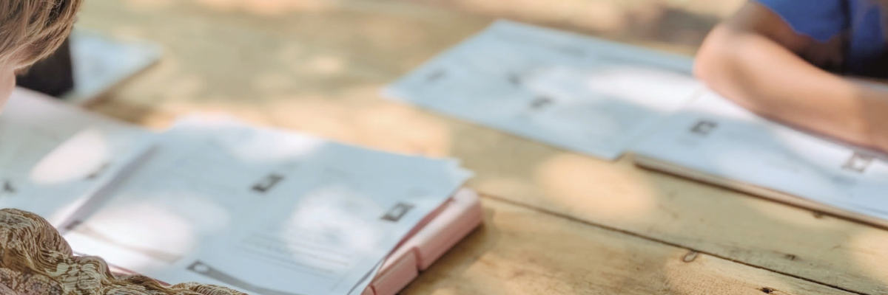
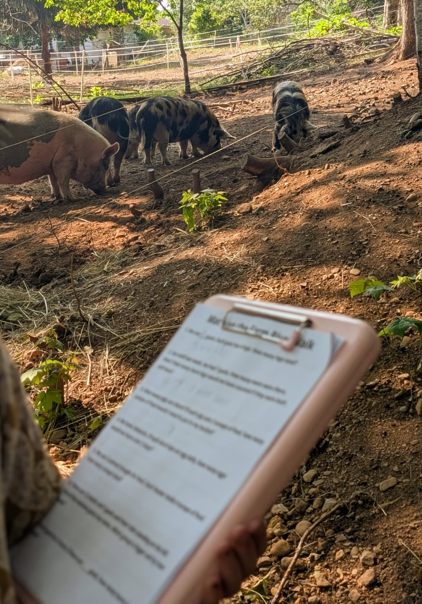
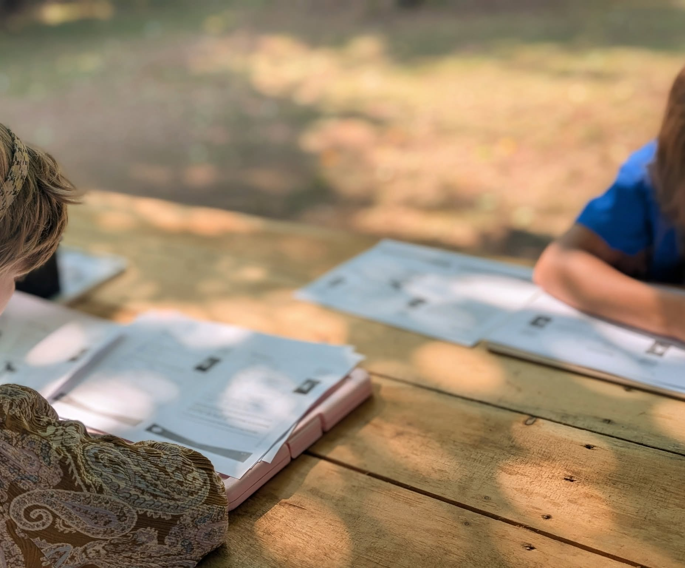
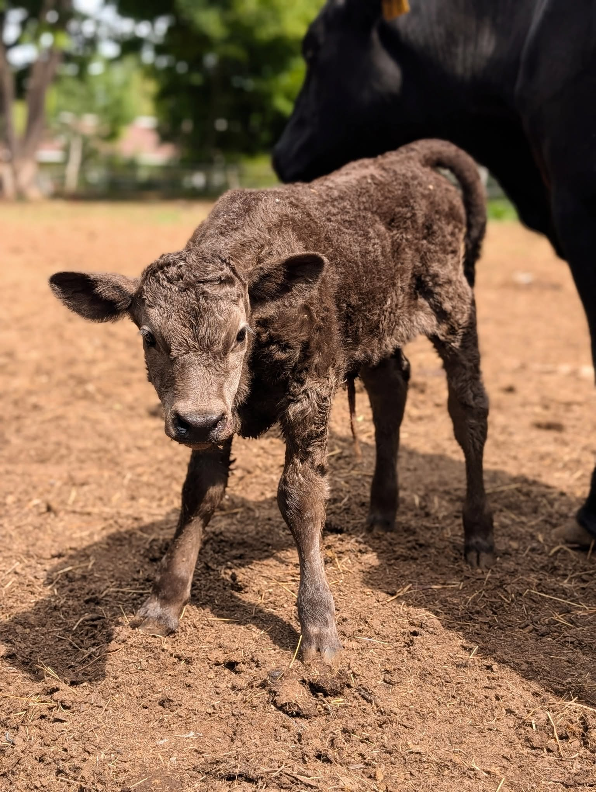

RH Learning
Learning circles are on hiatus for now, but one-on-one tutoring is still available with limited hours. Education consulting, IPP advocacy, and curriculum work are all open by request.
RH Learning grew out of what we were already doing with our own kids: taking their questions seriously, following whatever thread they were curious about, and letting the world around us do a lot of the teaching.
Before the farm, I spent thirteen years in the classroom. I hold a Master's in Education and worked as an educational and equity specialist, which the kids could not care less about, but it shapes how I build a session and how I read a room full of seven-year-olds.
We opened it up to other families because we wanted our kids to learn alongside others, and because there are families in this area looking for something different. Not necessarily a replacement for school, but something that runs alongside it or instead of it, depending on where your family is at.
Circles run on the farm because the setting is part of the point. Math happens in front of the pig pen, phonics happens on the picnic table, and a wonder question that starts inside will usually end up at the fence line with the goats before anyone notices it moved.



Each circle is built around a Wonder Question, with literacy, numeracy, science, and social learning woven together throughout the session. Groups are multi-age, four to eight kids, and curriculum-linked but led by whatever the kids are actually curious about.
Circles are not running right now, but when they come back, families on the contact list will hear first.
For kids who need focused support in reading, writing, or math, or who just do better with someone's full attention. Sessions are tailored to where the child actually is, not where the calendar says they should be.
Some kids come for a few months to get over a specific hurdle, and others come regularly through the year. We work at each child's pace and both approaches are welcome.
We have experience supporting families through Individual Program Plans, working with schools on accommodations, and advocating for kids who learn differently. If your child needs support that the system isn't providing on its own, we can help you navigate that conversation.
We also take on curriculum writing projects. If you need learning materials developed for a specific context, age group, or set of outcomes, get in touch and we can talk about scope.
Every circle begins with a Wonder Question. Not a question with one right answer, but one that's worth actually sitting with for a while. Kids come at it through reading, writing, counting, drawing, building, or whatever fits the thread that day.
Because we're on a farm, the learning has a way of leaving the table. A lesson about cycles ends up at the compost pile, a counting exercise drifts toward the goat pen, and nobody has to force it because it just happens when the subject matter is right outside the door.
We keep groups small on purpose. Eight kids is a crowd here, and four is better. That size means we can actually know where each child is and respond to it, instead of teaching to the middle of a group and hoping the edges keep up.
Each circle is built around a central question that kids can approach from multiple angles. These are a few from past sessions.
"If every goat has four legs, how many legs do we have in total, and what else on the farm can we count that way?"
"What makes someone a pirate, and how would you tell a pirate story from the perspective of the ship?"
"How do animals on the farm know what season it is, and how do we know?"
"What does it mean to take care of something, and what on this farm depends on us to take care of it?"
"Why do eggs come in so many colours, and how can we use colour to sort, count, and describe the world around us?"
"What changes on the farm between morning and evening, and how could we track it over a whole week?"
Learning circle outcomes are mapped to Nova Scotia primary curriculum standards across literacy, numeracy, science, and personal development, and kids go home with a daily summary sheet and at-home extension activities so you can see what they covered.
If your child attends school, RH Learning works alongside it. If you're homeschooling, it works for that too. We're flexible about how it fits into whatever your family already has going on.
Tutoring hours are limited and consulting is by request, but if any of this sounds like what you've been looking for, or you want to be on the list for when circles come back, we'd love to hear from you.